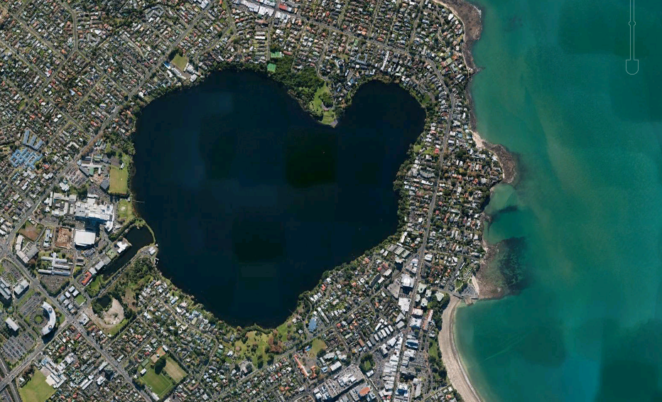

Lake Pupuke traditionally known in Māori as Pupukemoana - is a heart-shaped freshwater lake occupying a volcanic crater (or maar) situated to the east of Westlake Boys High School. The heart shape is a result of its formation by the linking of two circular craters - a larger one forming most of the lake and a smaller one forming the arm in the northeast. Separated from the sea by less than 200 m at one point, it has a circumference of about 4.5 km and reaches 57m in depth. It is popular for recreational activities and the lake front property around it.
Other similar craters in the Auckland volcanic field were either buried by later eruptions or breached by erosion as rainwater collected and overflowed the edge of the crater. Lake Pupuke remains a lake because, unlike the other vents, its eruptions produced substantial lava flows; water can thus escape through cracks in the lava reaching under the crater wall, creating a series of freshwater springs along the beaches between Takapuna and Milford. The lava flow at the end of Takapuna Beach enveloped a kauri forest, producing an internationally significant collection of tree moulds, which has been called "New Zealand’s only example of a fossil forest preserved in a lava flow" and which "ranks among the best examples in the world." Some moulds have escaped burial by the boat ramp and car park built on top of the lava and can be viewed at low tide.

A traditional Māori legend surrounding the lake tells of a tupua couple, children of the fire gods. After quarreling and cursing Mahuika, the fire-goddess, their home on the mainland was destroyed by Matahoe, god of earthquakes and eruptions, on Mahuika's behalf. Lake Pupuke resulted from the destruction, while Rangitoto Island rose from the sea as their exile. The mists surrounding Rangitoto at certain times are considered the tears of the tupua couple for their former home.

Close to the Takapuna city centre, the lake is popular not only with wild birds (such as shags) but with picnickers, paddlers, kayakers, rowers, yachtsmen, divers, and windsurfers (lessons have been given on the lake). Free divers (no tanks) have practiced in the lake. College rowing crews use it. There have been boating races. and the Pupuke Boating Club operates there. Takapuna Boating Club hosts regattas.
The Auckland Dragon Boat Association runs an annual regionals race event on the lake, with 200m, 500m and 2 km races. The lake is the venue for Dragon Boat, Canoe sprints, Canoe marathon, and Waka Ama sprint racing within the Canoe Competition at the World Masters Games 2017 held in Auckland.
Lake Pupuke is suitable for swimming but is murky and contains thick vegetation, and there have been drownings. The lake has been tested for bacteria and generally meets safe swimming conditions.